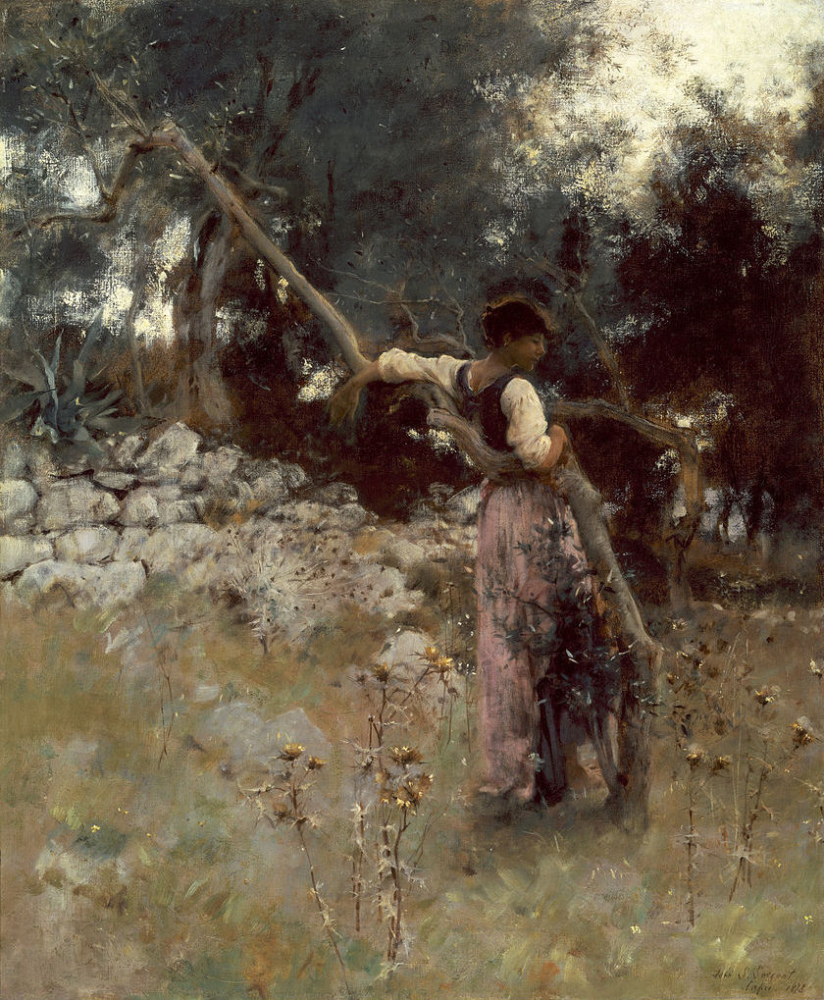

Słowa i obrazy
Trwaj w milczeniu
A teraz zamknij oczy, trwaj w milczeniu,
byśmy to wszystko zamknąć mogli
w ciemności naszej i wytchnieniu,
(jak ktoś do kogo to należy).
Przy życzeniach, przy projektach,
niespełnionych, które kiedyś wykonamy,
tam gdzieś w nas głęboko tkwi
również to; jest – jak list,
który zamykamy.
— Improwizacje z capryjskiej zimy, przeł. B. Antochewicz
John Singer Sargent „A Capriote”, 1878